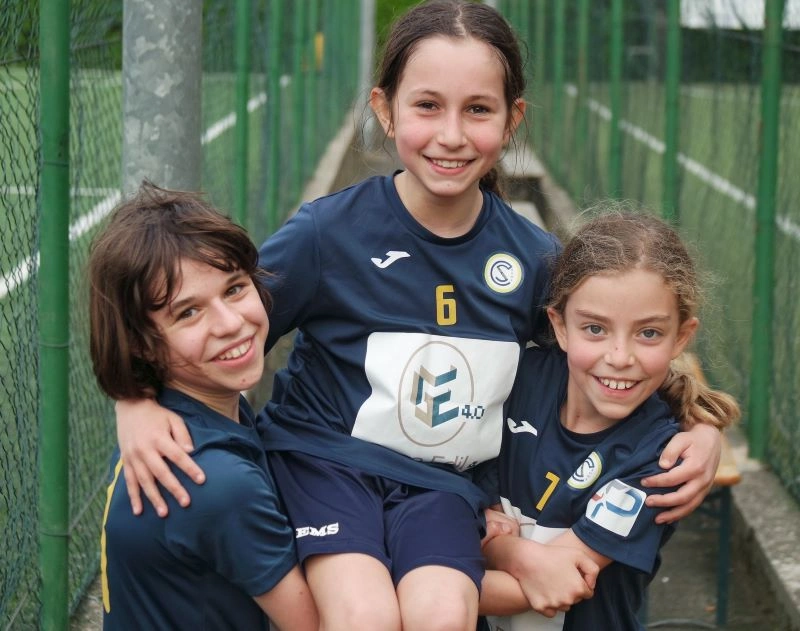
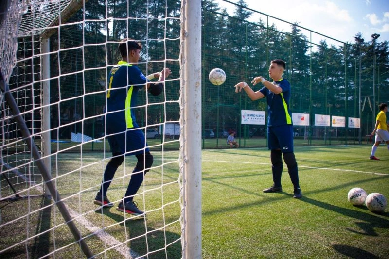

club sport roma
la nostra storia
La Nascita del CLUB Sport Roma
La società Club Sport Roma nasce nel 2016, originariamente sotto il nome di Sporting Juvenia, una società sportiva con sede nella zona nord di Roma. Gli inizi sono stati umili, con poche categorie e senza un settore giovanile strutturato. Tuttavia, grazie alla dedizione e al duro lavoro, il club ha rapidamente raggiunto importanti traguardi. Tra questi, spiccano la vittoria del campionato regionale di Serie C1, un titolo regionale con la squadra Under 21, e un successo nel campionato Under 17. Questi risultati hanno segnato una svolta, permettendo al Club Sport Roma di partecipare per la prima volta ai prestigiosi Campionati Nazionali maschili, avviando un percorso di crescita continua.

La Crescita del Settore Femminile
Negli ultimi anni, il Club Sport Roma ha dato grande importanza allo sviluppo del settore femminile, con risultati straordinari. La prima squadra femminile, attualmente impegnata nel campionato di Serie C Femminile, si è distinta nelle ultime due stagioni, raggiungendo la finale di Coppa Italia Regionale. Grazie all’aumento significativo delle atlete tesserate, il settore femminile si è ampliato ulteriormente e oggi può contare ben 7 categorie femminili! Questo successo è frutto di una programmazione attenta e dell’impegno nel promuovere lo sport femminile, creando opportunità per giovani atlete di crescere e competere in un ambiente sano e stimolante.

Lo Staff e le Attività del Club
Attualmente, la società conta circa 180 tesserati, tra
atleti e atlete, seguiti da uno
staff altamente qualificato. Gli allenamenti sono gestiti da tecnici di
primo livello, tra cui:
- Allenatori con certificazione UEFA B Calcio a 5;
- Allenatori e allenatrici specializzati in Calcio a 5 Regionale;
- Laureati in Scienze Motorie.
Ogni squadra è inoltre supportata da dirigenti e accompagnatori dedicati, che seguono
costantemente i ragazzi e le ragazze nei rispettivi impegni sportivi. Le nostre attività
comprendono la partecipazione ai Campionati FIGC, tornei nazionali, eventi
sportivi e campus
organizzati durante l’intera stagione. Questo approccio ci consente di offrire
un’esperienza
sportiva completa e formativa, sia dal punto di vista tecnico che umano.

Una società in Crescita
Il Club Sport Roma rappresenta oggi una realtà solida e in continua espansione nel panorama del futsal italiano. Attualmente, la nostra società milita con orgoglio nel campionato nazionale di Serie B, confermandosi tra le protagoniste di questa prestigiosa competizione. Grazie all’impegno quotidiano di atleti, staff e dirigenti, il nostro obiettivo rimane quello di crescere, raggiungere nuovi traguardi e offrire un punto di riferimento per chiunque voglia avvicinarsi al mondo del calcio a 5.